Ability System
This page will serve as an manual to how the Ability System functions in LobsterFramework.
Contents
- Intro
- Basics
- Ability Instancing
- Shared Data Between Abilities
- Customized Running Condition & Signal Handling
- Join Abilities
- Coroutine
- Utilities
- Notes
- Summary
- What Goes Next
Intro
Before we begin, it is necessary to clarify what kind of ability system we're dealing with here. The idea is directly taken from League of Legends, a MOBA game of 10 where each player play as a champion with a couple unique abilities. Here're some observations.
- Most abilities have cooldowns which represents the amount of time it'll take for them to be available to cast again.
- Some abilities can be interacted with after the initial cast.
- Each ability's effect is somewhat unique, but the extent of these effects (i.e. how much health is restored on a healing spell) is governed by a set of champion stats (Attack Damage, Ability Power, etc) that is shared by all champions.
- Some abilities feature effects that is affected by stats/resources that only exists on certain champions.
- Abilities can be interrupted
- Abilities have priorities. When 2 champions each cast a unique ability that is able to cancel the other champion's ability cast on each other, the outcome is the ability with higher priority goes through and cancels the other.
- Some abilities can be toggled on/off
There're some other features I will not go in detail here. Overall, based on these observations, in order to be able to implement these features easily, the design goal is for it to have the following properties:
- Ability can have unique attributes
- Ability can have unfixed duration at runtime
- Data can be shared between abilities
- Ability can be evaluated in a certain order to avoid race condition
- Ability can be interrupted
- Ability can react to events
- Ability can receive input and produce output while running
- Configurable ability settings, the configuration can be saved assets and should act like other assets and be used by any entity.
- Editor Support: Having custom inspector that allows developers to easily configure ability settings
- Code-Backed & Single Threaded. All abilities and the associated parts should be implemented with code. Although developers can edit abilities settings in the inspector, this system is not intended for creation of abilities inside unity editor.
Usage
The following examples will demonstrate how to use the ability system in your project.
Basics
Ability Manager & Ability Data
Start in a simple scene with our character.
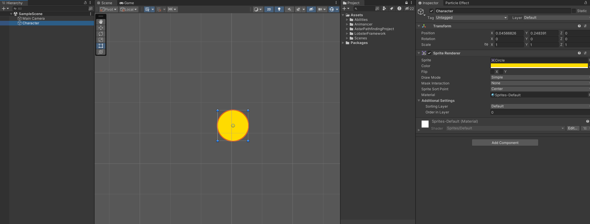
We want our character to cast abilities, to do that, we'll add the AbilityManager component. This component requires an AbilityData as input, which defines the set of abilities our character will have access to.
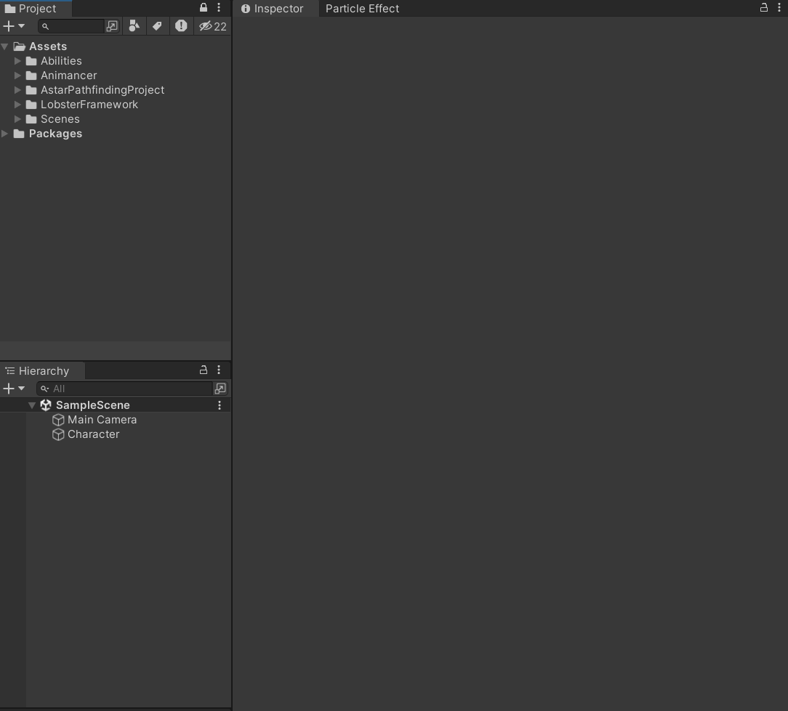
Defining Abilities & Editing Properties
Now that there's not much going on as we haven't defined our abilities yet! Let's start with this simple definition of CircleAttack.
// CircleAttack.cs
using LobsterFramework.AbilitySystem;
using UnityEngine;
[AddAbilityMenu]
public sealed class CircleAttack : Ability
{
protected override bool Action()
{
Debug.Log("Attack!");
/* Code to deal damage to the enemy */
return false;
}
}
public class CircleAttackConfig : AbilityConfig { }
public class CircleAttackChannel : AbilityChannel { }
public class CircleAttackContext : AbilityContext { }
Defining an ability is really simple! The only thing we are required to do is implement Ability.Action() method. This method will be called during ability invokation, which occurs right before the LateUpdate() unity event, and will continously be called every frame until the method returns false. Currently our ability immediately terminates after dealing damage to the enemy.
Make sure the [AddAbilityMenu] attribute is applied and the bottom 3 classes match the names letter by letter in the example. The former makes the ability definition visible to the ability system and it will then use reflection to search for and validate the definition of these 3 supplementary classes. We'll talk about those later in other examples. We should now be able to see the option to add this ability to the data asset we created moments ago when we open the editor. Also, the ability system requires all abilities that are instantiable to be sealed for safety concerns.
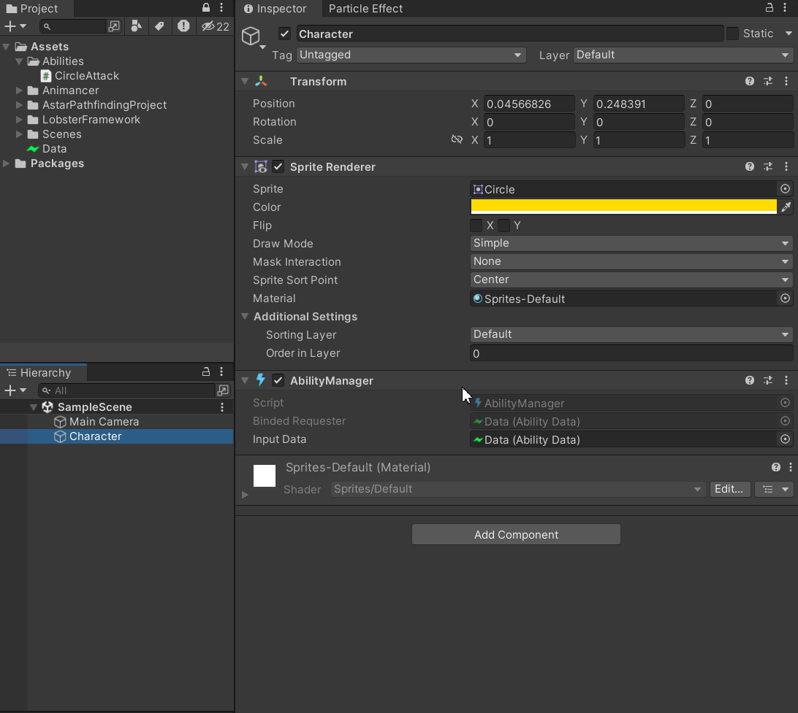
Here inside the inspector we can edit ability settings. Currently the only thing we can edit is the cooldown and execution priorities of the ability. The former determines the frequency the ability can be casted and the latter dictates the order of invokation of this ability. The higher the priority, the earlier the ability will be executed in relation to other abilities. We can also define our own properties of the ability that can be edited in the inspector. Take a look a the extended definition of CircleAttackConfig:
// CircleAttackConfig.cs
using LobsterFramework.AbilitySystem;
public class CircleAttackConfig : AbilityConfig {
public int AttackDamage;
}
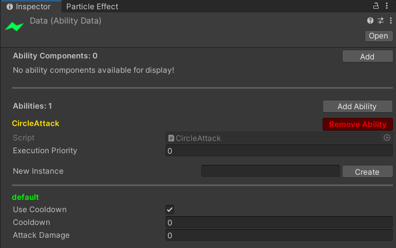
The newly added field AttackDamage can now be edited inside the inspector. Note that we have moved CircleAttackConfig out as a separate file from CircleAttack.cs since unity has trouble displaying editor for multiple classes defined in the same file and will throw warnings.
To access the newly added data field from CircleAttack, we need to use the variable Ability.Config:
// CircleAttack.cs
using LobsterFramework.AbilitySystem;
using UnityEngine;
[AddAbilityMenu]
public sealed class CircleAttack : Ability
{
protected override bool Action()
{
CircleAttackConfig config = Config as CircleAttackConfig;
Debug.Log($"Attack for damage {config.AttackDamage}!");
/* Code to deal damage to the enemy */
return false;
}
}
public class CircleAttackChannel : AbilityChannel { }
public class CircleAttackContext : AbilityContext { }
Invoke Ability
Time to put it all together! We are going to cast this ability through the AbilityManager component we just added to our character. Let's create a simple player controller component and map it with mouse left click using the unity input system.
// PlayerControl.cs
using LobsterFramework.AbilitySystem;
using UnityEngine;
public class PlayerControl : MonoBehaviour
{
[SerializeField] private AbilityManager abilityManager;
public void Attack() {
abilityManager.EnqueueAbility<CircleAttack>();
}
}
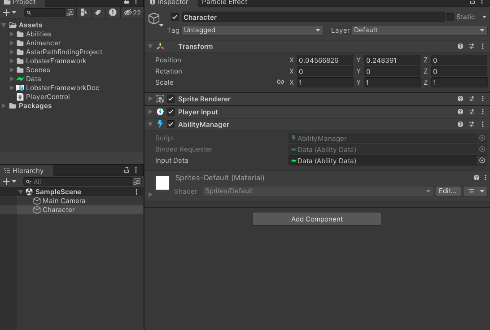
Here we're using AbilityManager.EnqueueAbility<T>(string) for ability invokation, note that this call should only be done during Update() or FixedUpdate() or anywhere before LateUpdate() since the ability execution will take place right before LateUpdate() and the ability will not be runned during the current frame if being enqueued during LateUpdate(). When we enter playmode and spam left clicks, we can see the output of the ability on the console. Additionally, we can use AbilityManager inspector to edit ability data in real time. The changes won't get saved to the disk unless the Save button is clicked. You can also use Save As button to store a copy of the AbilityData somewhere else.
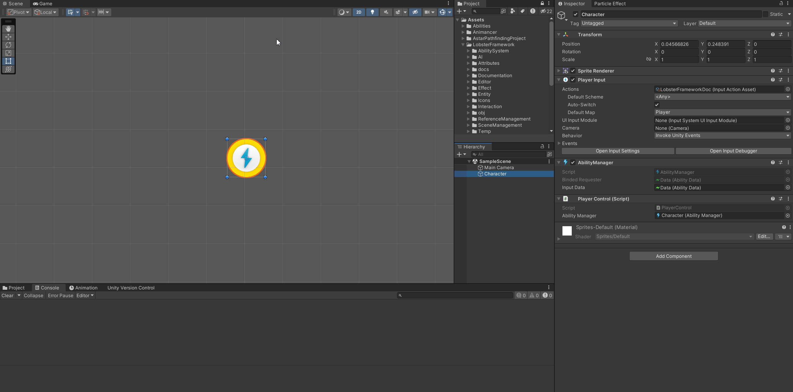
Ability Instancing
Ability Config, Channel & Context
In some cases we want our character to be able to cast the same ability with different settings in 1 play session, such as shooting different bullets from the weapon, or throwing out punches with different strength. We would need to define an ability for each variation that has the same behavior but only differs in parameters, which is not ideal. Here we introduce the concept of ability instance to help us solve this issue.
An ability is allowed to have multiple instances running at the same time. The number of instances allowed for each ability is equal to the number of configurations defined for the ability. It consists of a configuration of the ability, a communication channel that allows for sending input and reading output from the ability while it's executing and a context object that holds all of the temporary variables during its execution. These directly corresponds to Ability.Config, Ability.Channel and Ability.Context variables that we have access during ability callbacks. At runtime, we can choose any ability instance we have created to run, or multiple of them when necessary as they're independant from each other. Let's take a look how things are put together in action! Continuing from our last example, we have this simple scene setup:
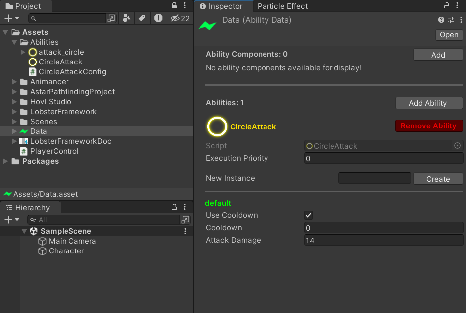
In case you're wondering, you can assign icon to your ability script to have it displayed in the inspector for visual clarity. Here we have a particle system attached to our character, we will use it to draw particle effect as our ability effect. We want to be able to choose from 2 different colors to draw the particle effect in play mode. The AbilityData editor allows us to create & edit configurations for ability instances. We will start by creating a new configuration for our ability:
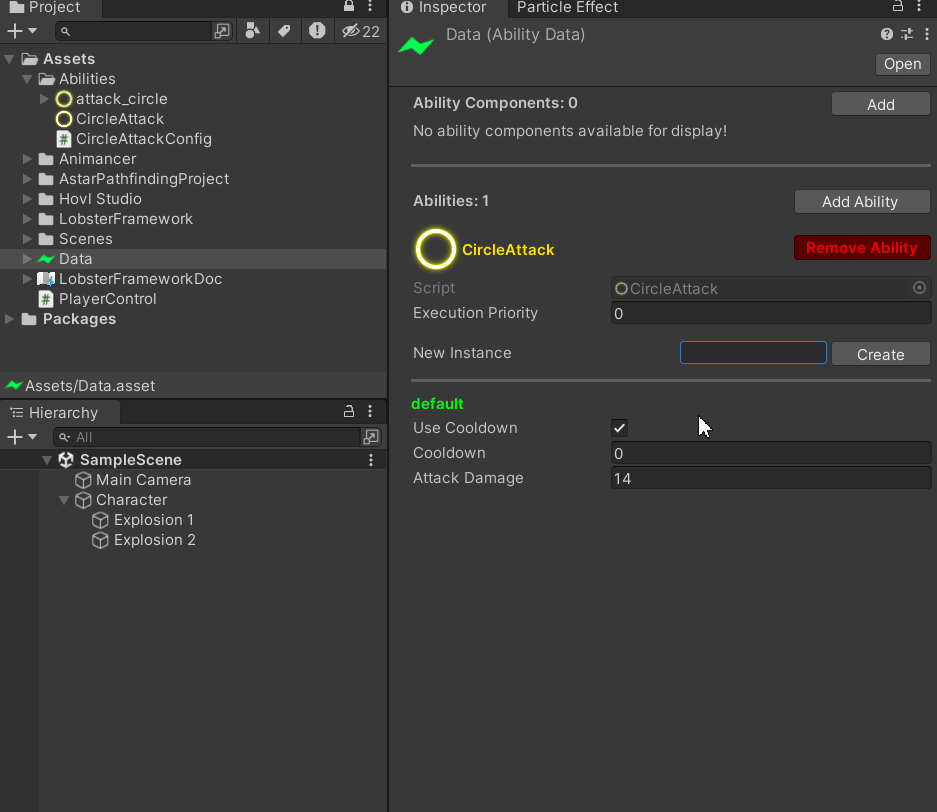
Now that we have 2 configurations for our ability, it is important to know how to invoke each of them. We'll modify our player control script as follows:
// PlayerControl.cs
using LobsterFramework.AbilitySystem;
using UnityEngine;
using UnityEngine.InputSystem;
public class PlayerControl : MonoBehaviour
{
[SerializeField] private AbilityManager abilityManager;
public void Attack1(InputAction.CallbackContext context) {
if (context.started) {
abilityManager.EnqueueAbility<CircleAttack>("default");
}
}
public void Attack2(InputAction.CallbackContext context)
{
if (context.started)
{
abilityManager.EnqueueAbility<CircleAttack>("instance2");
}
}
}
AbilityManager.EnqueueAbility<T>(string) takes in a string parameter as the identifier to the ability configuration you wish to cast the ability with. By default it is 'default' when called without arguments for convenience. Here we have finished the setup of wiring player input mouse left key to Attack1() and mouse right key to Attack2(). Since we want them to differ in the color of the particles being played out, we will add another property to CircleAttackConfig.
// CircleAttackConfig.cs
using LobsterFramework.AbilitySystem;
using UnityEngine;
public class CircleAttackConfig : AbilityConfig {
public int AttackDamage;
public Color color;
}
Acquire Component Reference
Now we will need the reference to the particle system component attached to the character. Since we're asking for references to scene object, we cannot serialize them on an asset object. The simpliest way would be to use Component.GetComponent<T>() on Ability.AbilityManager as they're on the same game object. However this may not always be the case and this appoach would fail when the component is located elsewhere. Instead, we will use RequireComponentReferenceAttribute to achieve this goal:
// CircleAttack.cs
using LobsterFramework;
using LobsterFramework.AbilitySystem;
using UnityEngine;
[AddAbilityMenu]
[RequireComponentReference(typeof(ParticleSystem))]
public sealed class CircleAttack : Ability
{
protected override bool Action()
{
CircleAttackConfig config = Config as CircleAttackConfig;
Debug.Log($"Attack for damage {config.AttackDamage}!");
/* Code to deal damage to the enemy */
return false;
}
}
public class CircleAttackChannel : AbilityChannel { }
public class CircleAttackContext : AbilityContext { }
The AbilityManager and AbilityData inherits from ReferenceProvider and ReferenceRequester, therefore it is able to utilize editor support for abilities with RequireComponentReferenceAttribute.
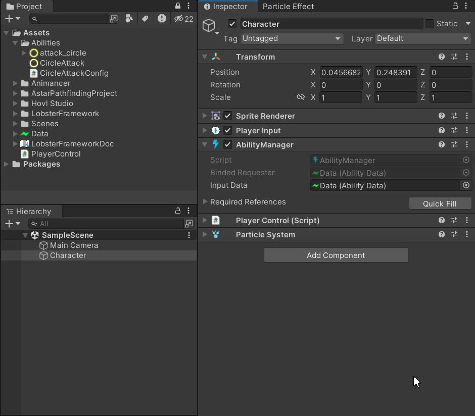
Note that once we apply this attribute the ability system will check if the field is null when entering the play mode. If the any of the required field is null for this ability a warning will be thrown and it may not be casted at runtime. Now we are prepared to modify CircleAttack to change the color of the particle system and play the particle effect. To access this reference, use Ability.GetComponentReference<T>(int):
// CircleAttack.cs
using LobsterFramework;
using LobsterFramework.AbilitySystem;
using UnityEngine;
[AddAbilityMenu]
[RequireComponentReference(typeof(ParticleSystem))]
public sealed class CircleAttack : Ability
{
private ParticleSystem particleSystem;
protected override void InitializeSharedReferences()
{
particleSystem = GetComponentReference<ParticleSystem>();
}
protected override bool Action()
{
CircleAttackConfig config = Config as CircleAttackConfig;
var main = particleSystem.main;
main.startColor = config.color;
particleSystem.Play();
Debug.Log($"Attack for damage {config.AttackDamage}!");
/* Code to deal damage to the enemy */
return false;
}
}
public class CircleAttackChannel : AbilityChannel { }
public class CircleAttackContext : AbilityContext { }
Initialization & Finalization Routines
Since the component reference is shared among all ability instances, we can declare it as a property inside CircleAttack directly. Ability.InitializeSharedReferences() provides a routine for us to initialize any of these references when AbilityManager is enabled. Conversly, we also have Ability.FinializeSharedReferences() to allow for any clean up operations such as unsubscribing from events. For temporary fields that are specific to each ability instance defined in ability context requiring initialization, we have Ability.InitializeContext() and Ability.FinalizeContext() for this purpose. Here's the result when we run the game:
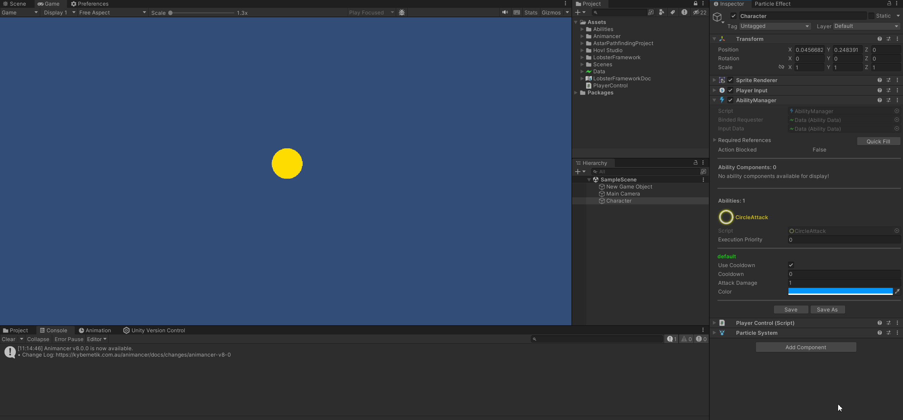
Shared Data Between Abilities
Edit Multiple Abilities In The Inspector
We need to define another ability for this part of the demonstration. Continuing from our last example, let us define SweepAttack that does almost exactly the same thing as CircleAttack to keep things simple:
// SweepAttack.cs
using LobsterFramework;
using LobsterFramework.AbilitySystem;
using UnityEngine;
[AddAbilityMenu("Example")]
[RequireComponentReference(typeof(ParticleSystem), "Particle VFX", "The particle vfx that will be played when the ability is invoked")]
public sealed class SweepAttack : Ability
{
private ParticleSystem particleSystem;
protected override void InitializeSharedReferences()
{
particleSystem = GetComponentReference<ParticleSystem>();
}
protected override bool Action()
{
SweepAttackConfig config = Config as SweepAttackConfig;
var main = particleSystem.main;
main.startColor = config.color;
particleSystem.Play();
Debug.Log($"Sweep Attack: {config.AttackDamage}!");
/* Code to deal sweep damage to the enemy */
return false;
}
}
public class SweepAttackChannel : AbilityChannel { }
public class SweepAttackContext : AbilityContext { }
// SweepAttackConfig.cs
using LobsterFramework.AbilitySystem;
using UnityEngine;
public class SweepAttackConfig : AbilityConfig
{
public int AttackDamage;
public Color Color;
}
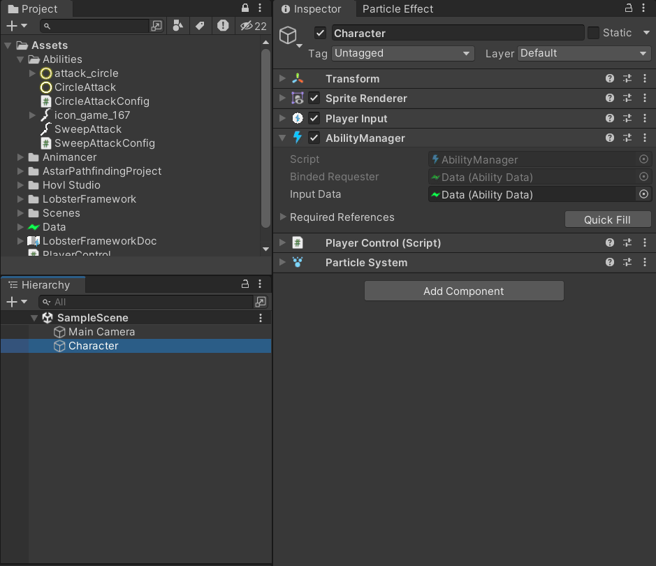
The above demonstrates how multiple abilities can be edited using the inspector. Note that you can pass multiple arguments to the RequireComponentReferenceAttribtue to customize the name and tooltip of the exposed property fields.
AbilityComponent
As previously stated in the design goals, abilities should be able to have access to a shared resource. A simple way to implment this is by adding a property that stores the reference to a shared data object to each ability. However, this approach can fail if any of the reference is forgotten to be assigned and manually doing these assignments is cumbersome and error prone. We will see later on how editor support can help with alleviating this problem. In LobsterFramework, the sharing of resources between abilities is implemented via AbilityComponent.
In the previous step, we defined SweepAttack and its config SweepAttackConfig the same as CircleAttack and CircleAttackConfig. Now suppose we want these 2 abilities' damage to be affected by the same data asset, we can do this by defining ChampionStat as follows:
// ChampionStat.cs
using LobsterFramework.AbilitySystem;
[AddAbilityComponentMenu("Example")]
public sealed class ChampionStat : AbilityComponent
{
public int AttackDamage;
}
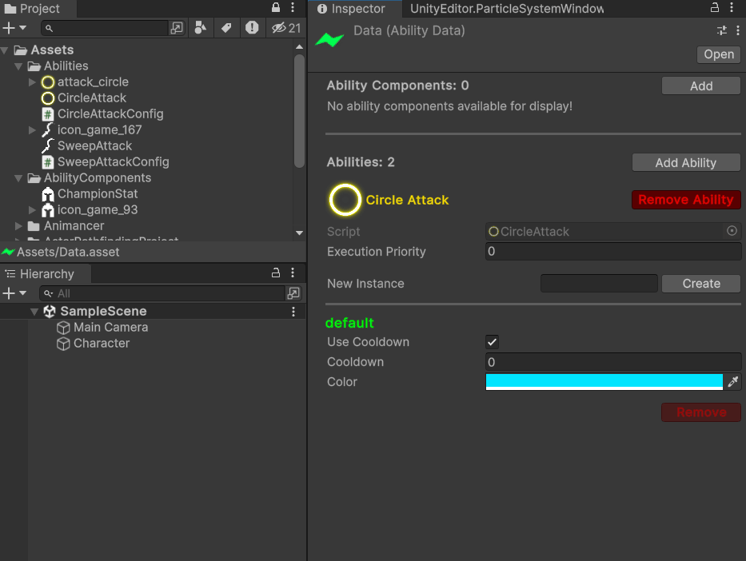
And we remove the field AttackDamage from both CircleAttackConfig and SweepAttackConfig as they're no longer needed. To access ChampionStat, use Ability.GetAbilityComponent<T>():
// CircleAttack.cs
using LobsterFramework;
using LobsterFramework.AbilitySystem;
using UnityEngine;
[AddAbilityMenu("Example")]
[RequireComponentReference(typeof(ParticleSystem))]
public sealed class CircleAttack : Ability
{
private ParticleSystem particleSystem;
private ChampionStat stat;
protected override void InitializeSharedReferences()
{
particleSystem = GetComponentReference<ParticleSystem>();
stat = GetAbilityComponent<ChampionStat>();
}
protected override bool Action()
{
CircleAttackConfig config = Config as CircleAttackConfig;
var main = particleSystem.main;
main.startColor = config.Color;
particleSystem.Play();
Debug.Log($"Circle Attack: {stat.AttackDamage}!");
/* Code to deal damage to the enemy */
return false;
}
}
public class CircleAttackChannel : AbilityChannel { }
public class CircleAttackContext : AbilityContext { }
Enforce the Requirement
The ability system features RequireAbilityComponentAttribute to allow the custom inspector to help developers to enforces the requirements of abilities. When attempting to remove an ability component from ability data, the editor script will check the number of abilities relying on it. The operation will only be carried out once the script has verified that number is 0, otherwise an error will be displayed in the console, indicating which abilities depend on it:
// CircleAttack.cs
using LobsterFramework;
using LobsterFramework.AbilitySystem;
using UnityEngine;
[AddAbilityMenu("Example")]
[RequireComponentReference(typeof(ParticleSystem))]
[RequireAbilityComponent(typeof(ChampionStat))]
public sealed class CircleAttack : Ability
{
/*...*/
}
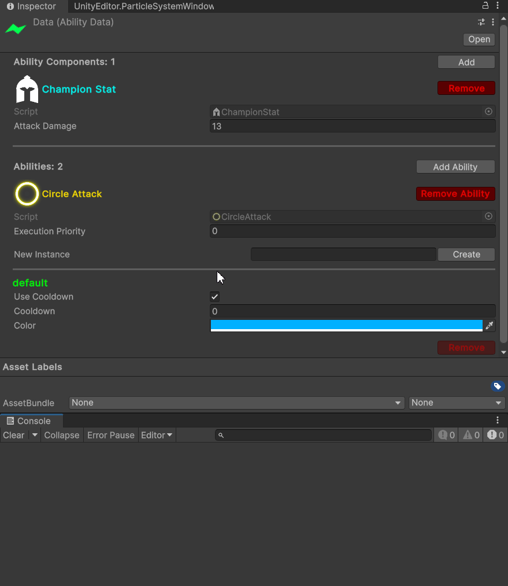
Conversely, when attempting to add an ability while its requirements are not satisfied, an error will be displayed:
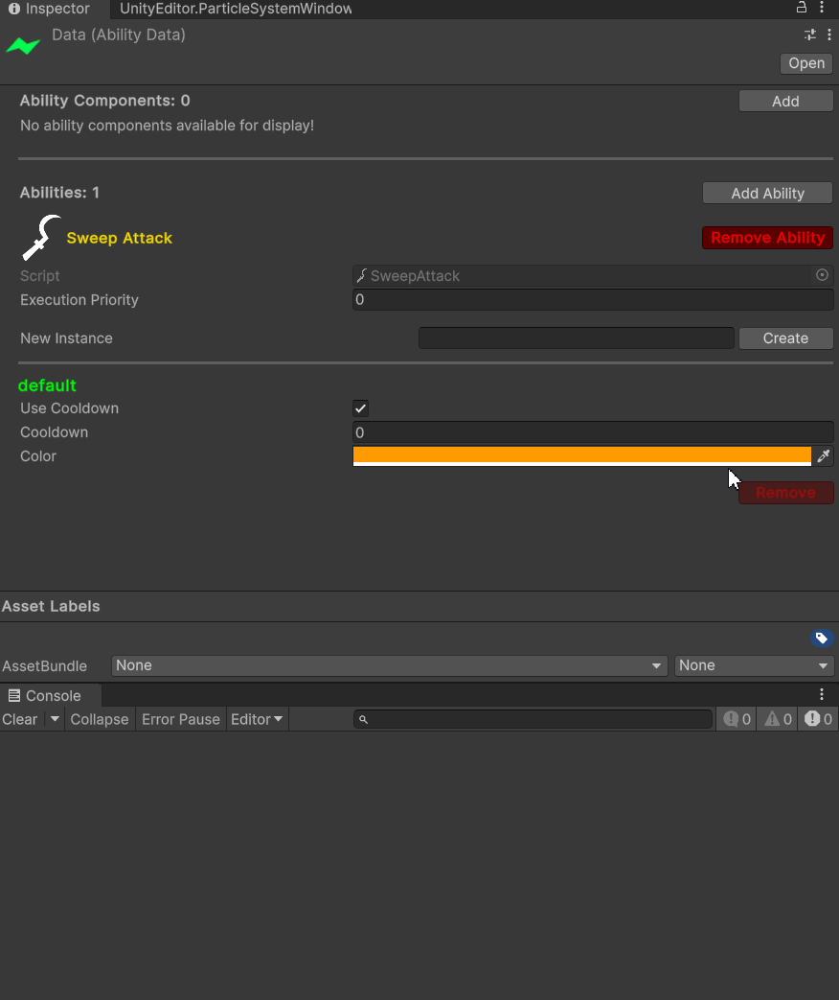
If new requirements have been added for the ability, the validation process will automatically add the missing ability components and display warning on the console. This is displayed as warning to notify the developer of any potential asset corruption.
Customized Running Condition & Signal Handling
Ability Condition
The ability system has built in support for verifying ability cooldowns. However, developers are allowed to make their own customized rules about when the ability can be executed. Here's an example of using Ability.ConditionSatisfied() to implement Fireball:
// Fireball.cs
[AddAbilityMenu]
[RequireComponentReference(typeof(Mana))]
public sealed class Fireball : Ability {
private Mana manaComponent;
protected override void InitializeSharedReferences(){
manaComponent = GetComponentReference<Mana>();
}
protected override bool ConditionSatisfied(){
// Only allowed to cast fireball if the mana cost can be satisfied
FireballConfig config = Config as FireballConfig;
return manaComponent.mana >= config.cost;
}
protected override bool Action(){
/* Code to control fireball */
}
}
// FireballConfig.cs
public class FireballConfig : AbilityConfig{
public int cost;
}
// Mana.cs
public class Mana : Monobehavior {
public int mana;
}
Prepare & Reset Ability Context
Sometimes there are actions you want to perform once before and after the ability execution, like playing ability animation and deduct the cost of the ability. These can be done by overriding Ability.OnAbilityEnqueue and Ability.OnAbilityFinish:
// Fireball.cs
[AddAbilityMenu]
[RequireComponentReference(typeof(Mana))]
public sealed class Fireball : Ability {
private Mana manaComponent;
protected override void InitializeSharedReferences(){
manaComponent = GetComponentReference<Mana>();
}
protected override bool ConditionSatisfied(){
// Only allowed to cast fireball if the mana cost can be satisfied
FireballConfig config = Config as FireballConfig;
return manaComponent.mana >= config.cost;
}
protected override void OnAbilityEnqueue(){
FireballConfig config = Config as FireballConfig;
manaComponent.mana -= config.cost;
/* Code to play control fireball animation */
}
protected override bool Action(){
/* Code to control fireball */
}
protected override void OnAbilityFinish(){
/* Code to switch to walk animation */
}
}
Animation Event & Ability Signals
Oftentimes we want to make use of animation events to make sure the game logic is synchronized with the animation, for this use case, use AbilityManager.AnimationSignal(AnimationEvent) and implement Ability.OnSignaled(AnimationEvent). To stop the ability, use AbilityManager.AnimationEnd(). Additionally, you can also use parameterless AbilityManager.Signal<T>() and implement Ability.OnSignaled() to implement signals issued by code. Continue using the example, the Fireball will be more powerful when we signal it:
// Fireball.cs
[AddAbilityMenu]
[RequireComponentReference(typeof(Mana))]
public sealed class Fireball : Ability {
private Mana manaComponent;
protected override void InitializeSharedReferences(){
manaComponent = GetComponentReference<Mana>();
}
protected override bool ConditionSatisfied(){
// Only allowed to cast fireball if the mana cost can be satisfied
FireballConfig config = Config as FireballConfig;
return manaComponent.mana >= config.cost;
}
protected override void OnAbilityEnqueue(){
FireballConfig config = Config as FireballConfig;
manaComponent.mana -= config.cost;
/* Code to play control fireball animation */
}
protected override bool Action(){
FireballContext context = Context as FireballContext;
if(context.isEmpowered){
/* Code to make fireball bigger if not already */
}
/* Code to control fireball */
}
protected override void OnSignaled(AnimationEvent){
FireballContext context = Context as FireballContext;
context.isEmpowered = true;
}
protected override void OnAbilityFinish(){
FireballContext context = Context as FireballContext;
context.isEmpowered = false;
/* Code to switch to walk animation */
}
}
public class FireballContext : AbilityContext {
bool isEmpowered;
}
For AbilityManager to properly handle animation event, the animation must be started via Ability.StartAnimation(AnimationClip,float). This allows it to remember which ability instance started the animation and thus will call the correct ability instance when an animation event is received. Calling this method when there's already an active ability instance playing animation will override that animation and that ability instance will receive Ability.OnAnimationInterrupt(Animancer.AnimancerStart) signal if it's not the same ability instance. The default implementation will simply terminate the abiliy instance.
Interrupt & Stop Ability
To stop the execution of an ability instance, use AbilityManager.SuspendAbilityInstance<T>(string) or Ability.SuspendInstance(string) while in the context methods.
To stop the execution of all instances of an ability, use AbilityManager.SuspendAbility<T>() or Ability.SuspendAll() while in the context methods.
To stop the execution of all abilities, use AbilityManager.SuspendAbilities().
The effect will take place immediately, Ability.OnAbilityFinish() will be called and the query of the status of the ability instance will indicate the ability instance is no longer running. Here's an example scenario of where stopping ability can be used:
public class PlayerControl : MonoBehavior {
[SerializeField] private AbilityManager abilityManager;
public void Move(Vector3 direction){
abilityManager.SuspendAbilityInstance<Fireball>();
/* In this context the following also works:
abilityManager.SuspendAbility<Fireball>()
abilityManager.SuspendAbilities()
*/
/* Code to move in the specified direction */
}
}
Join Abilities
The AbilityManager provides support for one ability to terminate along with another ability. It is called joining abilities under this context. For an ability instance A to join another ability instance B, it would mean that when B terminates, A will be terminated right after B. However, the opposite it not true. A is still allowed to terminate on its own, and when any of A or B terminates, this relationship no longer holds and the next time A or B is runned they will be completely independent as usual.
To do this, call AbilityManager.EnqueueAbilitiesInJoint<T,V>(string, string) or from ability methods, call Ability.JoinAsSecondary<T>(string)
Here's an example usecase:
// BuffAttack.cs
// Ability that periodically buff user's next weapon attack
public sealed class BuffAttack : Ability {
protected override OnAbilityEnqueue(){
/* Code to apply buff */
}
protected override Action() {
// Do nothing and wait until the joined ability finishes
return true;
}
protected override OnAbilityFinish(){
/* Code to remove buff */
}
}
/* Definition of channel and context types */
/* Perform buffed attack if the buff ability is not on cooldown, otherwise perform normal attack */
public class PlayerControl : MonoBehavior {
[SerializeField] private AbilityManager abilityManager;
public void Attack(){
if(!abilityManager.EnqueueAbilitiesInJoint<Attack, BuffAttack>()){
abilityManager.EnqueueAbility<Attack>();
}
}
}
Coroutine
The ability system provides an extended version of Ability named AbilityCoroutine that allows abilities to be executed like coroutines. Of course, with the order of execution by ability priorities still being preserved as it is directly implemented via the ability interface. Inheriting from AbilityCoroutine will allow you to write the ability code that remembers its position before return so that in the next frame the execution will continue from that position. Similar to UnityEngine.YieldInstruction, the coroutine will return a CoroutineOption indicating whether the coroutine will continue, wait for another coroutine, wait for condition, wait for time/unscaled time or reset. Here's a simple example of weapon ability Attack implemented via coroutine:
// Attack.cs
[AddAbilityMenu]
public sealed class Attack : AbilityCoroutine {
protected override void OnCoroutineEnqueue(){
AttackContext context = Context as AttackContext;
context.isAnimationSignaled = false;
/* Code to start weapon attack animation */
}
protected override IEnumerable<CoroutineOption> Coroutine(){
AttackContext context = Context as AttackContext;
// Wait for the end of the attack wind up
while(!context.isAnimationSignaled){
yield return CoroutineOption.Continue;
}
context.isAnimationSignaled = false;
/* Code to activate weapon hitbox */
// Wait for the end of attack
while(!context.isAnimationSignaled){
yield return CoroutineOption.Continue;
}
/* Code to deactivate weapon hitbox */
AttackConfig config = Config As AttackConfig;
yield return CoroutineOption.WaitForSeconds(config.recoveryTime);
// End of Execution
}
protected override void OnCoroutineFinish(){
/* Code to switch to walk animation */
}
protected override void OnSignaled(AnimationEvent event){
AttackContext context = Context as AttackContext;
context.isAnimationSignaled = true;
}
}
public class AttackContext : AbilityCoroutineContext {
public bool isAnimationSignaled;
}
// AttackConfig.cs
public class AttackConfig : AbilityConfig {
public float recoveryTime;
}
Methods Replacing Default Ability Interface
The ability interface is changed as follows:
Ability.Action()=>AbilityCoroutine.Coroutine()Ability.OnAbilityEnqueue()=>AbilityCoroutine.OnCoroutineEnqueue()Ability.OnAbilityFinish()=>AbilityCoroutine.OnCoroutineFinish()
When defining context type for your ability, you must inherit from AbilityCoroutineContext instead of AbilityContext according to the rule of ability inheritence.
In addition, when CoroutineOption.Reset is yielded, the coroutine will restart from the beginning next frame it is invoked. AbilityCoroutine.OnCoroutineReset() is called immediately after receiving this return value to allow context variables to be reset before resuming next frame.
Utilities
Ability Selector
For dynamically loading in and changing the ability instance you wish to call, you'll need to be able to store this information and edit it inside the inspector. AbilitySelector is a serializable ability instance that can be edited in the inspector to support such behavior. In addition, RestrictAbilityTypeAttribute can be used to limit of the set of options you can have when editing the ability instance.
class PlayerController : Monobehavior {
[SerializeField] private AbilitySelector abilityToRun;
[SerializeField] private AbilityManager abilityManager;
/* ... */
public void RunAbility(){
abilityManager.EnqueueAbility(abilityToRun.AbilityType, abilityToRun.Instance);
}
}
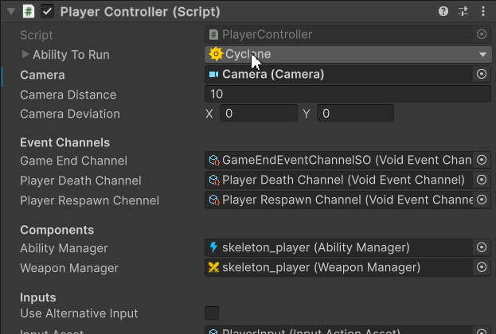
Notes
Life Cycle of Ability Instance
The ability system injects 2 events into the player loop event system using PlayerLoopEventGroupAttribute in the following order:
FixedUpdate() => Update() => Execution => Termination => LateUpdate()
When enqueuing an ability instance, it will be marked as running and Ability.OnAbilityEnqueue() is immediately called if this operation is successful. The ability instance will be added to the execution queue waiting to be executed. It is the programmer's responsibility to ensure the logic inside Ability.OnAbilityEnqueue() is independent of the execution priority of the abilities.
The Execution event executes enqueued abilitiy instances by calling Ability.Action() ordered by their execution priority. If the return value this method is false, Ability.SuspendInstance(string) will be called for the ability instance and it will be removed from the execution queue. Any ability instance that is marked as suspended via this method will have itself along with any other joined ability instances added to the suspension queue.
The Termination event goes through the suspension queue to suspend ability instances. Ability.OnAbilityFinish() is called during this process. The abilities are again handled in order by their execution priority. All suspended ability instances will then be removed from the suspension queue and be marked as not running and not suspended. To enforce this order, any ability instance that are later added to the suspension queue during the suspension process will be deferred to the next frame for suspension.
Summary
AbilityManager
Attach this component to the character to enable it to cast abilities. This component takes in an AbilityData as input. Calls to enqueue, query, terminate, send event to and communication with abilities should be done through this component during the Update() and FixedUpdate() unity event. The following section summarizes the set of methods this component has to offer.
Enqueue Abilities
AbilityManager.EnqueueAbility<T>(string)AbilityManager.EnqueueAbility(Type, string)AbilityManager.EnqueueAbilitiesInJoint<T, V>(string, string)
Suspend Abilities
AbilityManager.SuspendAbilityInstance<T>(string)AbilityManager.SuspendAbilityInstance(Type, string)AbilityManager.SuspendAbility<T>()AbilityManager.SuspendAbilities()
Join Abilities
AbilityManager.JoinAbilities(Type, Type, string, string)AbilityManager.JoinAbilities<T,V>(string, string)
Query
AbilityManager.IsAbilityReady(Type, string)AbilityManager.IsAbilityReady<T>(string)AbilityManager.IsAbilityRunning(Type, string)AbilityManager.IsAbilityRunning<T>(string)AbilityManager.IsAnimatingAbilityManager.ActionBlocked
Animation & Signaling
AbilityManager.AnimationSignal()AbilityManager.AnimationEnd()AbilityManager.Signal<T>(string)AbilityManager.InterruptAbilityAnimation()
Fetch Reference
Ability Data
An asset object that defines a set of Abilities and Ability Components. Client code should not interact with objects of this type directly. Can be edited using inspector.
AbilityComponent
An asset object that defines a resource shared by all abilities. References can be obtained via AbilityManager.GetAbilityComponent<T>().
Ability
An asset object that defines an ability in the Ability System. Client code should not directly interact with ability objects. To create new abilities, you must subclass it and implement the required methods. It comes with 3 complimentary classes that you must define: AbilityConfig, AbilityChannel, AbilityContext.
Mandatory:
The following must be implemented
Optional:
The following can be overriden but are not required to do so
void InitializeSharedReferences()void FinalizeSharedReferences()void InitializeContext()void FinalizeContext()bool ConditionSatisfied()void OnAbilityEnqueue()void OnAbilityFinish()void OnSignaled(AnimationEvent)void OnSignaled()void OnAnimationInterrupt()
Context Methods:
These methods have access to variables (not null): Ability.Config, AbilityChannel and AbilityContext
bool Action()void InitializeContext()void FinalizeContext()bool ConditionSatisfied()void OnAbilityEnqueue()void OnAbilityFinish()void OnSignaled(AnimationEvent)void OnSignaled()void OnAnimationInterrupt()
Others:
These methods are provided to support various actions & querying
T GetComponentReference<T>()T GetAbilityComponent<T>()AnimancerState StartAnimation(AnimationClip, float)bool SuspendInstance(string)void SuspendAll()bool JoinAsSecondary<T>(string)bool JoinAsSecondary(Type, string)bool HasInstance(string)bool IsReady(string)bool IsRunning(string)
AbilityConfig
An asset object that defines the setting of the ability. Only accessible while in the context methods. An instantiable ability needs to define {#NameOfAbility}Config that inherit from its closest ancestor's config type.
AbilityChannel
Allows client code to communicate with the ability when it is being runned. Accessible via AbilityManager.GetAbilityChannel<T>(string) where T is the type of the ability this channel type belongs and while in the context methods . An instantiable ability needs to define {#NameOfAbility}Channel that inherit from this type or its closest ancestor's channel type. Do not define constructors for this type as the system uses reflection to call the default parameterless constructor. For custom initialization see Ability.InitializeContext().
AbilityContext
Stores context variables use by the ability during its execution. Only accessible while in the context methods. An instantiable ability needs to define {#NameOfAbility}Context that inherit from this type or its closest ancestor's context type. Do not define constructors for this type as the system uses reflection to call the default parameterless constructor. For custom initialization see Ability.InitializeContext().
What Goes Next
- Custom Analyzer: Currently the system performs checks to ensure the type and arguments passed in via attributes are valid after compilation. As the codebase grow larger and more attributes are added the compilation time will increase. Custom analyzer can help lifting some of these workload and help developers to discover some of these errors before the scripts are compiled.